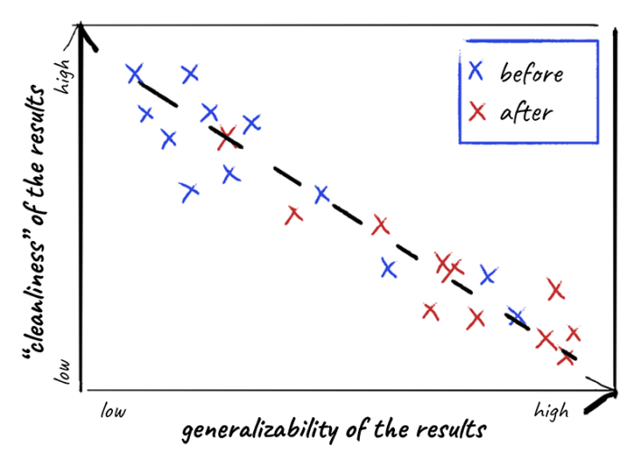
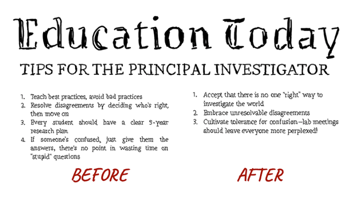
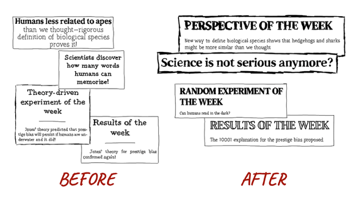
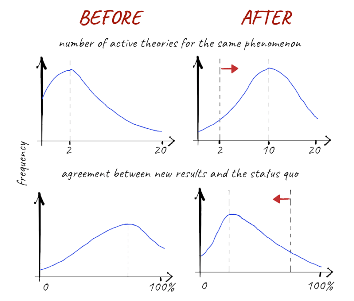

In 2026, science was under attack from denial and political turbulence. Ideologues and corrupt officials discontinued childhood vaccines. They dismissed climate science. Cancer biologists lost funding for life-saving research. Broad areas of science were banned for contradicting the party line, and world-class educational programs were shut down. It was a terrifying crisis for science and education. And it lasted for more than a decade.
Eventually, citizens rediscovered their reason and humanity and voted the science deniers into oblivion. Something else happened during the crisis. The chaos shook up the science community. Scientists, funders, and policymakers began to question whether scientific practice could be improved to better connect with citizens and stand up to the winds of politics. By 2040, the community had instituted what is now called “radically exploratory science,” an approach that abandons superficial markers of “good science” in favor of creative discovery.
I am Anya Aleksandrova, a historian of science, and I had the chance to witness and document this transformation. In the aftermath of the “Dark Period,” as the late 2020s and ’30s were known, many had to admit that the practice of science had come to resemble a factory, producing results based on standardized protocols. Back then, I was a graduate student in neurobiology, but I became less interested in neural circuits and more interested in how people did science, and why they did it that way.
Turns out, I wasn’t alone. From 2035 to 2042, as I conducted interviews about science, I saw a broad frustration building and witnessed a transformation unfolding. I won’t dwell on the policy changes that enabled this transition. Instead, I will focus on what scientists, funders, journalists, and citizens thought about it. Their testimonials trace the unprecedented shift from what I call directed science to exploratory science.
Science has been our most powerful guide to useful knowledge. It has led us to the moon, to vaccines, and to new forms of intelligence. While our best guide to knowledge, science was never perfect. The very features that defined good science constrained how much we could know.
Early natural philosophers, like Isaac Newton and Antoine Lavoisier, operated with few guidelines on how to conduct their research. But by the early 21st century, scientists mostly followed well-worn paths. They used standardized methods and built theories that aligned with existing disciplinary frameworks and assumptions held by many more people than there were in the 17th century. There was little room to diverge from these paths and encounter something truly novel.
In the early 21st century, scientists believed standard practices guided them to “objective” knowledge. By “objective,” they meant results that were clean and independent of the context in which they were produced—results taken to reflect the world as it truly is. Scientists obsessed over standard ways of conducting research, hoping to avoid unreliable questions, methods, and answers.
In the aftermath of the Dark Period, many had to admit the practice of science had come to resemble a factory.
The sciences seemed to settle on a narrow range of “good” research questions. “In my area, there’s a canon of fundamental questions every physicist must be focusing on,” said Dr. Martin Croot, a professor of theoretical physics. “Among them are, ‘What is the nature of space and time?’ and ‘What does matter consist of?’ If we solve these deep, foundational questions, we’ll be able to just derive everything else.” When scientists tried to pursue questions outside this canon, they often faced increased scrutiny, having to justify why their research was valid and worth the effort.
Scientists seeking answers to acceptable scientific questions followed acceptable experimental methods. Scholars like Peter Weber, a Ph.D. student studying human memory, used common experimental procedures to ensure that his colleagues approved of the work. “I use a standardized experimental design: Undergraduates sit in a dark room, memorizing words flashing on a computer screen for half a second each. To ensure rigor, every word is in the same font, and all screens have the same size and brightness,” Peter explained.
Scientists even established standards for what answers to their questions to nature should look like. Dr. Yuna Ahn, my own neuroscience professor, has always insisted that “a good theory has to be mathematical.” They taught me the standards of scientific modeling: “The idea is to choose the simplest model that accounts for the data. Adding more complexity than strictly necessary is unscientific. Producing new models when there is already a model that accounts for the results is a waste of time.” For Dr. Ahn, there was always a way to derive a single best mathematical explanation for experimental results. The “right” questions had “right” answers.

Illustration by Sam Chivers
Funding practices further reinforced scientists’ obsession with the kinds of questions, methods, and answers they thought guaranteed successful outcomes. Scientific funding tended to prioritize projects with predictable deliverables. “I fund projects most likely to succeed. Grant applications need preliminary data to show clear outcomes that proposed research is expected to yield,” explained Elizabeth Kovalenko, a government science funder. By trying to maximize scientific “impact” and “success” (I never fully understood what either meant), funding agencies supported fewer projects that explored something truly novel and therefore could not guarantee specific findings.
Some scholars I spoke to noticed that many of the enforced methodological standards were arbitrary. “My advisor insists I just use the standard experimental paradigm to study human memory. But does it even measure what we want?” wondered Elena Katz, a Ph.D. student in psychology. “Why test memory retention after two hours and not three? Why keep the font constant?”
Elena raised an issue that had really confused me when I was a grad student: While scientists celebrated certain methods, they had little evidence those methods were actually better than alternative approaches. By standardizing how they interact with phenomena, scientists improved the replicability of individual studies showcasing specific chosen settings, but at the expense of knowing whether these results would generalize to new settings. “We’ll never know if memory changes when information is presented differently, such as in different fonts,” Elena noticed, “because we have only ever tested one.”
The consequences of these norms and standard practices did not only affect scientists and funders. Citizens believed that science had all the right answers. But this set unattainable expectations and hindered honest communication about the complexity of scientific problems and the inherent uncertainty of scientific results. Jacob Johnson, a concerned citizen, reflected on his confusion over changing messages about vaccine efficacy: “Scientists said the vaccine worked, but now they’re adding all these details and nuances. How can we trust scientists if they keep changing their conclusions? If scientists use rigorous scientific methods, the results should stay the same.” Science remains our most powerful tool for understanding the world, but it cannot produce final truths once and for all. Scientists often failed to communicate this, leading the public to see revised conclusions as a failure of science, rather than recognizing that updating knowledge in light of new evidence is how science works.
Looking back from the early 2040s, my interviews highlighted the clear shortcomings of directed science, including its pretense of delivering objective answers to objective questions, a promise science can never fulfill. Many people recognized these issues and called for change, fueling a transition to a new way of doing science. They wanted a science focused on obtaining genuinely new knowledge about the world, one in which researchers were willing to explore and take risks instead of pursuing guaranteed results at the expense of discovery.
For some, the shift to radically exploratory science was rather smooth. Dr. Robert Goldstein, a psychology professor, embraced the change. He began moving away from conventional experimental paradigms. “In psychology, we used to rely on a few standard experimental methods, like tasks where people choose between two options associated with different prices, to gather data about complex human behavior. New methods would always raise extra skepticism. Why use a ‘sloppy’ technique, like a new task to study decision-making, when there is already a standardized, well-studied one?” he explained. “I know now that the reason to develop new behavioral tasks is precisely because they have not been studied before and so can yield more information!”

DIRECTED VS. EXPLORATORY:Directed science (blue) favors clean, easily interpretable results that only apply in specific situations. Exploratory science (red) produces messier, more uncertain findings, but these findings generalize more broadly. Each cross represents a study from one of the two worlds. Credit: James Holehouse.
Sebahat Öcal, a Ph.D. student in astrophysics, studies exoplanets—planets orbiting stars beyond our solar system. Because these planets are detected only indirectly, often through tiny dips or shifts in starlight, the same limited data can support many different interpretations. Sebahat focuses on brainstorming “as many explanations as possible” for her findings.
“Instead of forcing one explanation from limited evidence, I outline the widest range of theories that might fit the results,” she explained. “I sometimes use AI tools to help generate explanations I wouldn’t have come up with on my own, expanding the range of ideas I can consider. This approach has helped me remain open-minded, laying fertile ground for useful theories when new data arrive.”
I asked Sebahat how she avoids pseudoscientific theories when generating so many explanations. “I think what makes someone’s work scientific is how much they engage with the world. If someone has an idea but doesn’t care about the evidence, or if they shoehorn any evidence to support the idea, I would call that pseudoscience. But if someone is trying to think through many different ways the same evidence might be interpreted, they’re doing the opposite—they’re engaging with the evidence in its full richness and complexity. There is always a wide range of possible explanations for finite scientific evidence, more than any one person can come up with on their own.”
From 2035 to 2042, I saw a broad frustration building and witnessed a transformation unfolding.
Since superficial standards were abandoned, some researchers have come up with remarkably creative ways to engage with the unknown. For Dr. Qiaoweng Liu, a psychology professor, metaphor is a powerful tool for thinking. “When I want to understand something, like human memory, I pick a random object—such as a pickle—and brainstorm connections. Memory is like a pickle: It degrades over time, and sour memories linger more than sweet ones. These analogies inspire fresh hypotheses, experimental designs, and new explanations.”
Funders supported riskier projects, prioritizing wide exploration over predictable outcomes. Martin Bauer, a science funder, told me that his funding decisions now involved a leap of faith: “We fund scientists who do things so strange and confusing that I often don’t understand them myself. Sometimes, we even pick scholars or projects to fund at random.”
When I first heard this, I couldn’t believe my ears. He explained why this approach might be better than the older funding model. “I remember when funding focused on projects that built on previous discoveries and were likely to yield ‘good’ results. But how useful can a project really be if we already know its outcome? Real innovation comes from giving scientists the freedom to explore entirely new directions, where no one can really predict what might be found.”
Martin illustrated his approach with a historical example. “Remember how antibiotics were discovered? Fleming had general institutional support to study bacteria when he accidentally contaminated a petri dish with mold. He noticed that the moldy area was the one where the bacteria had been cleared. Fleming was open-minded enough to recognize the strange result and that’s why we now know that fungi can kill bacteria. There’s no way he could have predicted what he was about to stumble upon, let alone write a detailed grant proposal outlining all the expected results! I want to support such unexpected discoveries by funding high-risk research.”

EMBRACE CONFUSION:A handy guide for scientists. How to counter directed science with exploratory science. Credit: James Holehouse.
Exploratory science has led to breakthroughs in medicine and psychiatry, often by encouraging scientists to make their foundational assumptions explicit and go beyond them. Dr. Mingze Chang, who recently developed a new taxonomy for understanding and treating mental illness, describes her unconventional approach: “I’m passionate about finding cures for mental illnesses, though we’re not even sure there’s a unified way of understanding what they are. Take ADHD, for example. When exploring possible mechanisms and treatments, I sometimes start with the assumption that ADHD might be mechanistically similar to another condition, like major depressive disorder. At other times, I try to think of ADHD as many distinct disorders, each with different mechanisms that might be susceptible to different treatments. This helps me think creatively about what a given mental illness might be, without sticking to outdated assumptions that might be wrong.”
After talking with Dr. Chang, I wondered: How will patients make sense of their diagnosis if the taxonomy it’s based on is always in flux? Can we see and communicate many paths?
What became clear to me was that radically exploratory science demanded innovative ways of communicating nuanced and complex scientific knowledge. Samuel Virtanen, a government science advisor, explained the new reality of his job: “It’s unrealistic to expect definitive answers from science, but exploratory approaches give us more information, not less. By embracing uncertainty about what conclusions can be drawn from the evidence, we no longer rely on a single-point conclusion. Instead, we report a full range of possibilities and openly discuss the criteria we use to make real-world decisions.” He illustrated this shift with an example: “Consider COVID-19. Back then, public communication about science often conveyed too much certainty, even when the evidence was incomplete and changing fast. Later revisions of policies, such as those around wearing masks, felt like contradictions. Now, we do things differently. We report uncertainty in the data when suggesting any measures. In emergencies, we often have to act before all the evidence is in. By being transparent about what we know, what we don’t, and what assumptions our advice depends on, we make it clearer why recommendations may change over time.”

YESTERDAY & TODAY:Science news headlines reflect the transition from directed science to exploratory science. Credit: James Holehouse.
Revisiting these testimonials has helped me realize the key differences between directed science and exploratory science. In directed science, the most recognized contributions adhered to the superficial conventions of what counts as scientific. Accepting the “Most Rigorous Scientist” award in 2019, Dr. Elaine Pauper described her approach: “Experiments must test a clear and important hypothesis, like ‘Humans can memorize exactly 23 words per minute.’ I hypothesize what I expect to see in the data before conducting the experiment. To ensure rigor, I preregister my predictions and never tweak the data to fit my expectations. I conduct only the analyses I planned before seeing the data and stick to the interpretations I laid out beforehand.”
Directed science promoted a deliberate focus on a single path, the one considered “most objective,” and discouraged exploration beyond that path. Though this approach might seem overly restrictive, it offered some advantages: Scientists faced less uncertainty and avoided confronting conflicting results. By following a specific chosen path, scientists could travel far along it, refining their methods and theories along the way.

NEW UNDERSTANDINGS: Top: In directed science (left), researchers typically entertain only a small number of competing theories for the same phenomenon. In exploratory science (right), scientists generate as many possible explanations as they can. Our data suggest that there is a cognitive limit to how many theories people can meaningfully hold in mind, peaking at around 10. Bottom: Directed science (left) relies on similar methods, leading to similar findings and interpretations. Exploratory science (right) encourages new methods, which are more likely to produce genuinely new results and, with them, revised understandings of the world. Credit: James Holehouse.
After the transition, a different approach to science came into the spotlight. Dr. Rafael Firebrand, honored for their groundbreaking contributions to exploratory science, described their work: “I managed to confuse not just myself, but all my colleagues. I created a new measurement instrument to collect data, ran different analyses to uncover thousands of patterns, and proposed 500 different explanations for them.” Despite the apparent chaos, Dr. Firebrand sees immense value in their contribution: “It might seem impossible to grasp at the moment, but I visualized all possible results and interpretations in an interactive web app. It reveals a vast amount of information, one that won’t be fully understood for years.” By traveling along many intellectual paths, Dr. Firebrand uncovered an incredible wealth of information, interacting with the world in multiple rich ways instead of exploring only one narrow side of it.
The transition from directed to exploratory science opened new avenues for progress, but not without tradeoffs and challenges. How novel can a result be such that we can still understand it? How satisfying is it to live in the world of uncertainty and confusion? How much exploration is too much? Without any landmarks, I worry that exploring too many directions at once could leave us completely lost along the way.
But having lived through the Dark Period, I believe the greater danger lies elsewhere. A science that avoids stepping outside what we already know and promises certainty invites stagnation, disappointment, and mistrust. Exploratory science, by contrast, asks more of us. It requires patience, humility, and openness to the true complexity of the world. By opening many paths instead of narrowing ourselves to one, science has regained something it once lost: the courage to engage with the messiness of the unknown. 
—Anya Aleksandrova, Nov. 24, 2042
Källförteckning
- Originalartikel: https://nautil.us/the-thrill-of-science-in-2042-1270684/